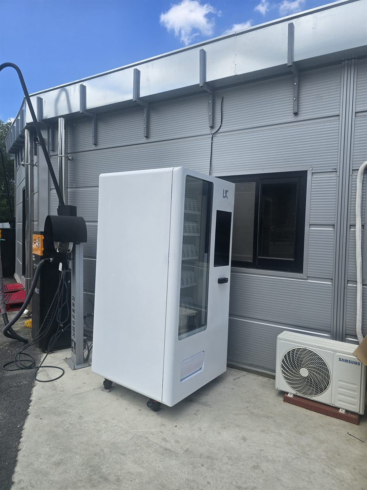

광진구 무인자판기 설치
셀프세차장 세차 공간 음료·스낵 자판기

셀프세차장은 손님이 오래 머무는 곳입니다. 거품을 뿌리고 헹구고 에어건으로 물기를 털어내고 실내를 진공청소기로 정리하기까지, 한 바퀴를 제대로 돌면 이십 분은 훌쩍 넘어갑니다. 그동안 손님은 세차장 부지 안을 계속 왔다 갔다 합니다. 잠깐 스쳐 가는 자리가 아니라 체류 시간 자체가 길게 확보된 자리라는 점이 다른 업종과 가장 크게 다릅니다.
광진구에서 들어온 이번 문의도 대수나 품목 이야기보다 물이 어디까지 날아가는지를 먼저 봤습니다. 세차장은 고압수와 거품이 생각보다 멀리 튑니다. 세차 베이 안쪽에서 보면 괜찮아 보여도, 손님이 호스를 휘두르는 방향까지 계산하면 안전한 거리가 확 줄어듭니다. 그래서 베이와 관리동 사이의 여유 폭을 재고, 배수 경사 때문에 물이 고이는 지점을 피한 뒤에야 자리를 확정했습니다.
광진구 셀프세차장에 맞는 구성
세차는 몸을 쓰는 일입니다. 여름이면 땀이 나고 겨울이면 손이 얼기 때문에, 팔리는 품목이 운전자용 음료와는 조금 다릅니다. 용량이 큰 생수와 이온음료를 가장 넓은 칸에 깔았고, 탄산은 한 번에 비우기 좋은 캔 위주로 넣었습니다. 추운 계절에는 따뜻한 음료 쪽 칸을 넓히는 편이 반응이 낫습니다. 간식은 손에 물이 묻은 상태에서도 뜯기 쉬운 소포장만 남기고, 녹거나 부스러지기 쉬운 품목은 아예 뺐습니다.
결제는 카드와 간편결제 중심으로 잡았습니다. 셀프세차장은 이미 동전이나 카드로 기계를 돌리는 구조라 결제 자체에 거부감이 없고, 오히려 젖은 손으로도 한 번에 끝나는 방식이 편합니다. 실외 기계에 현금함을 두면 습기와 잔돈 관리가 계속 일거리로 돌아오기 때문에 권하지 않습니다. 재고와 온도는 사장님 휴대폰으로 확인되므로, 무인으로 돌리는 세차장이어도 기계 때문에 따로 나와 보실 일은 없습니다.
- 음료 — 대용량 생수·이온음료를 넓은 칸에, 캔탄산과 커피를 눈높이에
- 간식 — 젖은 손으로 뜯기 쉬운 소포장. 녹기 쉬운 품목은 제외
- 결제 — 카드·삼성페이·카카오페이·QR. 실외라 현금함은 쓰지 않음
- 관리 — 품절·온도를 원격으로 확인, 보충 시점만 알림으로 받음
좋은 점과 어려운 점
좋은 점은 무인 운영과 성격이 잘 맞는다는 것입니다. 셀프세차장은 대부분 상주 인원 없이 돌아가는데, 그렇다 보니 손님이 물 한 병 사려면 세차를 멈추고 밖으로 나가야 합니다. 자판기가 그 걸음을 없애 주면 손님은 자리를 뜨지 않고, 사장님은 사람을 더 쓰지 않고도 품목 하나를 늘리는 셈이 됩니다. 24시간 개방하는 곳이라면 심야에도 판매가 이어진다는 점도 장점입니다.
어려운 점도 말씀드리는 편이 낫습니다. 첫째, 물과 세제가 닿는 환경이라 자리를 잘못 잡으면 기계 표면이 빨리 상합니다. 거리를 넉넉히 두고, 필요하면 방향을 틀어 조작부가 베이 반대쪽을 보게 합니다. 둘째, 전원 경로를 한 번 잡으면 옮기기 어렵습니다. 실외 배선은 방수 처리를 같이 하기 때문에 나중에 몇 미터 이동하는 일도 작은 공사가 됩니다. 셋째, 세차장은 날씨를 그대로 탑니다. 비가 며칠 이어지면 방문 자체가 줄어 매출도 같이 내려가고, 한겨울에는 생수가 얼지 않도록 설정 온도를 올려 두어야 합니다.
광진구, 이런 자리가 잘 됩니다
광진구는 한강을 끼고 강변북로와 천호대로가 지나가는 구조라 차량 통행이 꾸준합니다. 자양동과 구의동은 주거가 두텁게 깔려 있어 주말 오전에 차를 손보러 나오는 수요가 고르게 나오고, 구의동에는 동서울종합터미널이 있어 지역 밖에서 들어오는 차량도 섞입니다. 광장동은 아차산 방면으로 이어지는 길목이라 나들이 차량이 지나가고, 화양동과 군자동은 건국대학교·세종대학교가 가까워 젊은 이용층 비중이 높은 편입니다. 능동은 어린이대공원 주변으로 주말 유동이 몰립니다.
자리를 고를 때 저희가 권하지 않는 곳은 세차 베이 바로 옆입니다. 손님 눈에 가장 잘 띄지만 물이 직접 닿고 호스 동선에도 걸립니다. 세차를 마치고 물기를 정리하는 구간, 진공청소기 앞, 관리동 출입구 옆처럼 손을 놓고 잠깐 숨 돌리는 지점이 훨씬 낫습니다. 실제로 음료를 사는 순간은 세차 중간이 아니라 끝나갈 무렵입니다.
광진구 서비스 지역
자양동 · 구의동 · 광장동 · 중곡동 · 능동 · 화양동 · 군자동
광진구 전역에서 방문 상담이 가능합니다. 인접한 성동구·동대문구·중랑구와 강동구도 같은 담당자가 함께 다닙니다. 지역별 안내는 광진구 무인자판기 설치 안내 페이지에서 보실 수 있습니다.
광진구 무인자판기, 이렇게 시작하시면 됩니다
전화나 상담 신청으로 주소만 남겨 주시면 됩니다. 담당자가 직접 나가서 베이와 관리동 사이 폭, 콘센트 위치, 배수 경사, 처마가 덮는 범위를 확인합니다. 그 자리에 맞는 기종과 품목을 정하고 설치일을 잡으면 끝이며, 설치비는 받지 않습니다. 기계는 구입·렌탈·임대 중에서 고르실 수 있어 초기 비용 없이 시작하셔도 됩니다.
물을 피할 자리가 나오지 않거나 전원을 안전하게 끌어올 방법이 없으면 그 자리에서 솔직히 말씀드립니다. 세차장은 환경이 험한 편이라 무리해서 넣었을 때 생기는 문제가 다른 업종보다 빨리 드러납니다. 처음에 안 된다고 말씀드리는 편이 서로에게 낫습니다.
※ 사진은 픽프리가 시공한 설치 사례이며, 글에 적힌 지역의 현장 사진은 아닙니다.
함께 많이 찾는 키워드
광진구 무인자판기 · 광진구 자판기 설치 · 광진구 자판기 임대 · 광진구 자판기 렌탈 · 서울 무인자판기 · 서울 자판기 설치 · 자양동 자판기 · 구의동 자판기 · 광장동 자판기 · 중곡동 자판기 · 능동 자판기 · 화양동 자판기 · 군자동 자판기 · 셀프세차장 자판기 · 세차장 자판기 · 실외 자판기 · 야외 자판기 설치 · 무인세차장 자판기 · 24시간 자판기 · 음료 자판기 · 생수 자판기 · 이온음료 자판기 · 스낵 자판기 · 무인키오스크 설치 · 스마트 자판기 · 카드 자판기 · 자판기 설치비용 · 자판기 창업